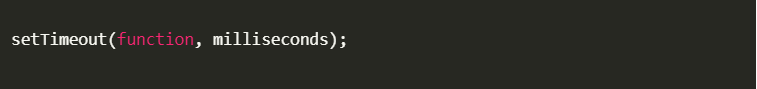
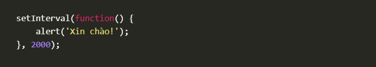
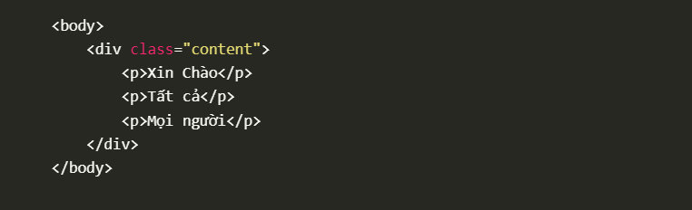
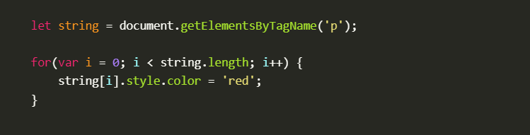
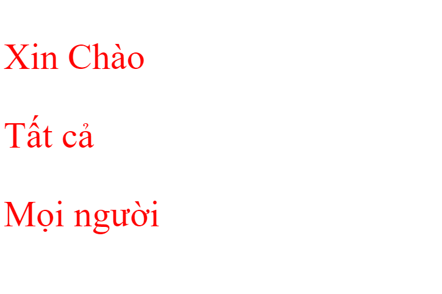
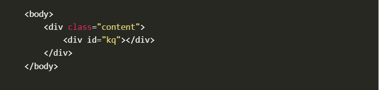
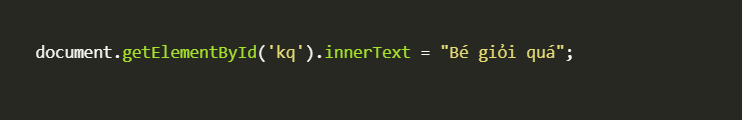

Lệnh setTimeout giúp bạn làm gì?
Hàm setTimeout() trong JavaScript được sử dụng để thực thi một hàm hoặc đoạn mã được chỉ định chỉ một lần sau một
khoảng thời gian nhất định.
Cú pháp cơ bản của setTimeout là

Ví dụ:
Hiện ra thống báo xin chào trên màn hình sau 2 giây

Kết quả:
Viết lệnh cần thiết để đổi màu chữ thành màu đỏ cho tất cả các tag p trong trang?
Ví dụ:
Mình có một đoạn HTML cơ bản như sau:

Để đổi màu chữ cho các tag p bằng JavaScript ta thực hiện như sau:

Kết quả:
Các pag p trong HTML đều đổi sang màu đỏ

Để hiện chữ " Bé giỏi quá " vào tag có id là kq thì viết thế nào?
Ví dụ:
Mình có một đoạn HTML cơ bản như sau:

Để để hiện thị chữ Bé giỏi quá bằng JavaScript ta thực hiện như sau:

Thư viện AngularJS giúp gì cho bạn? ngoài AngularJS còn thư viện nào khác không?
1.Thư viện AngularJS giúp gì cho bạn?
AngularJS cho phép tạo ra các ứng dụng một cách đơn giản với mã được tổ chức khoa học, rõ ràng.
AngularJS sử dụng data bind – liên kết dữ liệu với các thẻ HTML nên làm giảm thiểu mã lệnh đọc ghi dữ liệu.
AngularJS có thể chạy trên hầu hết các trình duyệt điện thoại thông minh.
Các thuộc tính tích hợp (các chỉ thị) làm cho dữ liệu trong tag HTML trở nên “động”.
Hỗ trợ ứng dụng đơn trang.
Hỗ trợ hai chiều ràng buộc dữ liệu.
Với AngularJS, lập trình viên sẽ viết ít code hơn, với nhiều chức năng hơn.
2.ngoài AngularJS còn thư viện nào khác không?
Vue.js
Vue.js là một framework JavaScript nhỏ gọn đã xuất hiện theo xu thế năm nay. Nó là một framework JavaScript phổ biến trên GitHub tính theo
lượng sao trên GitHub. Vue tuyên bố là một framework không quá cứng nhắc và do đó giúp nhà phát triển dễ dàng nắm bắt. Các mẫu cú pháp HTML của Vue gắn kết phần
DOM đã render với giá trị của dữ liệu.
Framework này cung cấp trải nghiệm như React với những Virtual DOM của nó và các component có thể tái sử dụng giúp bạn tạo ra cả widgets
và toàn bộ ứng dụng web. Hơn nữa, bạn cũng có thể dùng cú pháp JSX để viết phần chức năng render trực tiếp. Khi trang thái thay đổi,
Vue,js sẽ một hệ thống phản ứng để xác định rằng điều gì đã thay đổi và render só lượng nhỏ nhất các component. Vue.js cũng hỗ trợ tích hợp những thư viện khác vào
framework mà không cần tốn công sức nhiều.
Ember.js
Ember.jsj là một framework front-end vân hành trên mô hình Model-View-ViewModel - cấu trúc MVVM. Nó tuân theo nguyên
tắc hơn là phương pháp cấu hình, nó lạ sự phở biến giữa những franework sever-si server side khác như Ruby on Rail hoặc Laravel.
Ember.js tổng hợp với những câu thành ngữ và thực tiễn nhất vào trong framework vì thế bạn có thể khởi động một ứng dụng chẳng mất
nhiều công sức.
Ember thông thường gồm có:
Ember CLI: cung cấp chọn lựa tạo khuôn mẫu cơ bản (scaffolding) và hỗ trợ hàng trăm add-ons.
Ember Data: một thư viện data vững chắc có thể được cấu hình để làm việc với bất kỳ server back-end nào.
Ember Inspector: Một extension (phần mở rộng) cho Chrome và Firefox.
Liquid Fire: Một add-on cho việc chuyển đổi và hoạt hình.